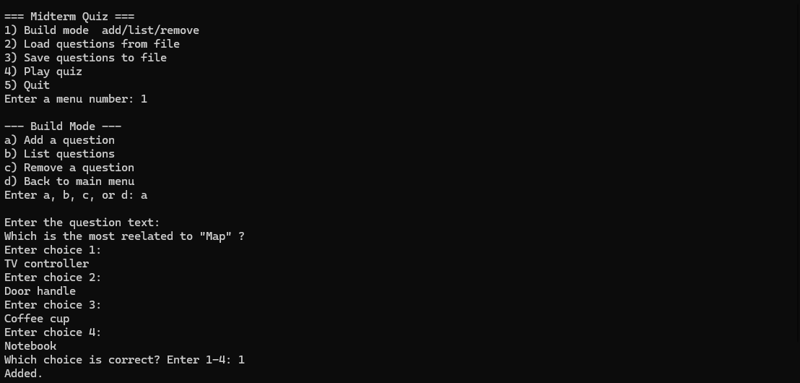
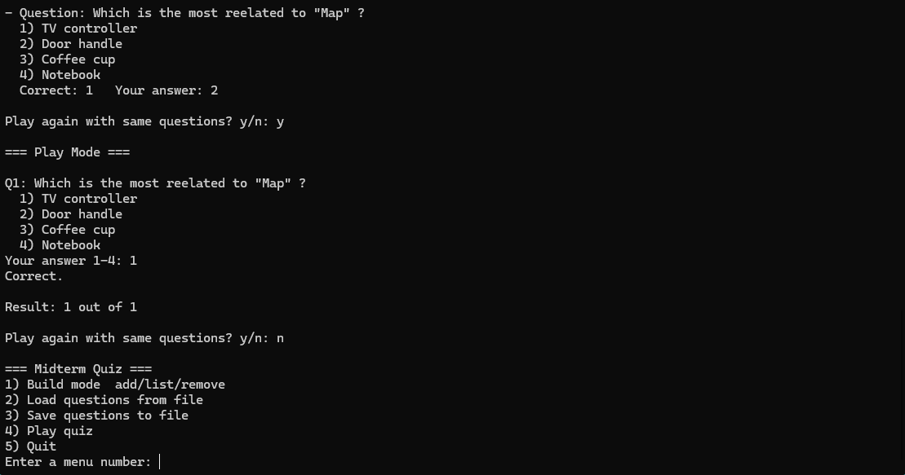

Console Quiz Builder
A text-based quiz app that keeps the flow predictable: build questions, save/load sets, then play and review results.
My role
Designed the menu structure and prompts, implemented the full program flow, and refined error handling and feedback to reduce user confusion during input-heavy steps.

Context / Problem
Console tools are fast to run, but they get frustrating when the menu hierarchy is unclear, inputs are easy to mess up, or the app gives weak feedback. I treated this as an interface design problem: keep navigation consistent, make input steps obvious, and always show what happened after an action.
Users & Core Tasks
- Create and edit a question set quickly.
- Reuse question sets by saving/loading from a file.
- Play a quiz with clear scoring and the option to replay.
Constraints / Environment
- Text-only interface, keyboard input only.
- User input is messy (typos, wrong menu numbers), so the UI needs guardrails.
- Must preserve state between modes and keep the user oriented.
Screens

Key Interaction Decisions
Consistent navigation
Main menu and sub-menus always use numbered/lettered options, with a clear back option. This keeps the mental model stable across modes.
Input guardrails
Prompts are explicit about the expected range (e.g., 1–4). After each action, the UI confirms what was added or changed.
Feedback that reduces anxiety
In play mode, the app shows correctness immediately and summarizes the score at the end, so users never wonder if their input was recorded.
Outcome
The result is a small but complete console interface that supports the full loop: build, persist, play, and replay. The UI stays predictable even when users make mistakes, because every step has a clear next action and a clear response from the system.
What I learned
Even without visuals, interaction design still matters. The same UX fundamentals apply: reduce ambiguity, make state visible, and design for recovery.